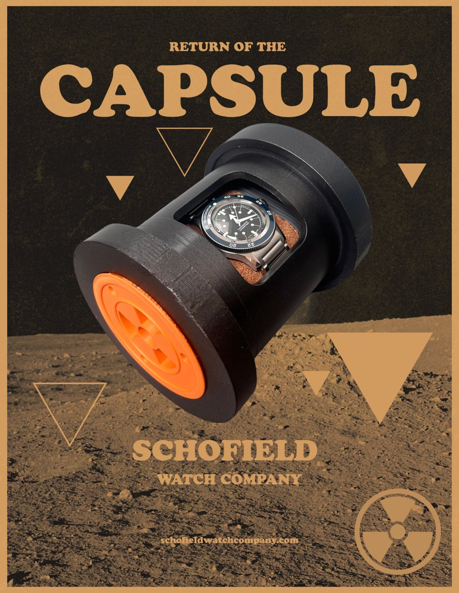

“Sterling work”: client feedback on the Schofield capsule

The Schofield capsule was a live brief from Giles Ellis at Schofield Watch Company: a watch box built around ritual, secrecy and belonging. Most of my time went into development: twist-off threaded end caps, a glass panel so the watch can be seen while the capsule is sealed, and a hidden compartment holding a paperstone "nuclear biscuit" that reveals the code word for the owners' club.
Giles opened his feedback with this:
Very good work Ethan, I had an inkling it would be impressive work. You were curious from the start, wanting to get all the details and it has served you well.
Giles Ellis, Schofield Watch Company
And on the capsule itself:
I cannot fault your development and additional functions. It is sterling work.
Giles Ellis
He finished by calling me "a very talented designer/thinker". Coming from someone who makes watches for people who notice every detail, that meant a lot.